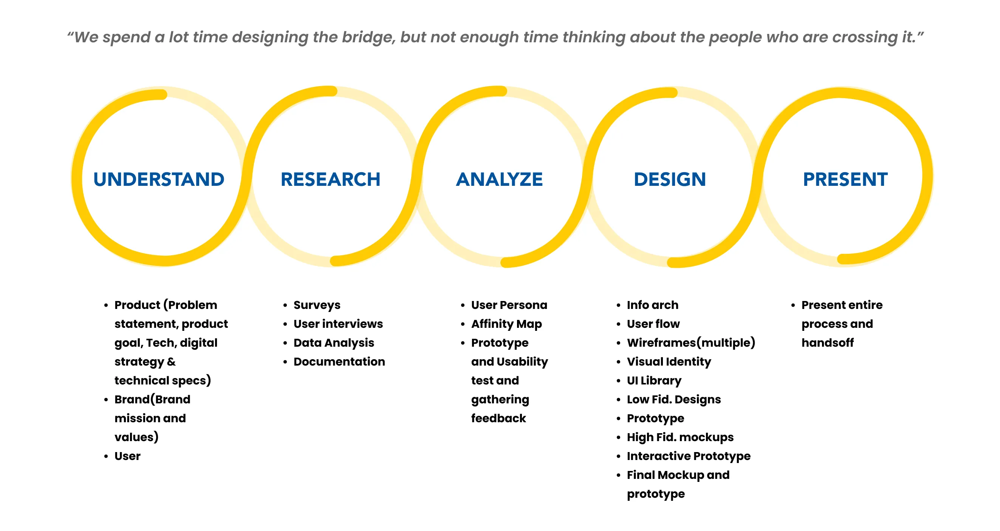
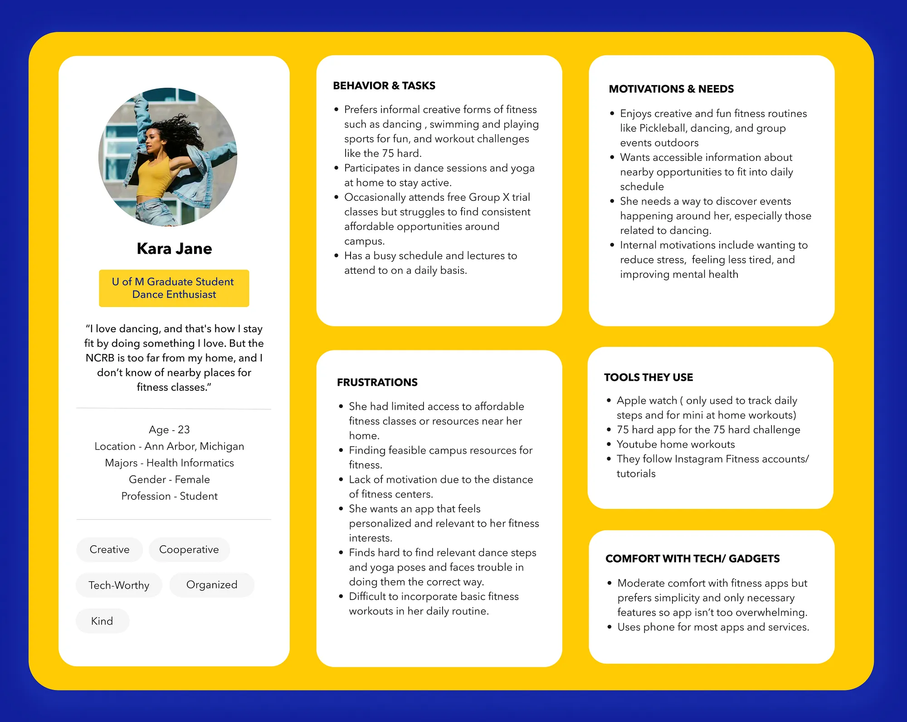
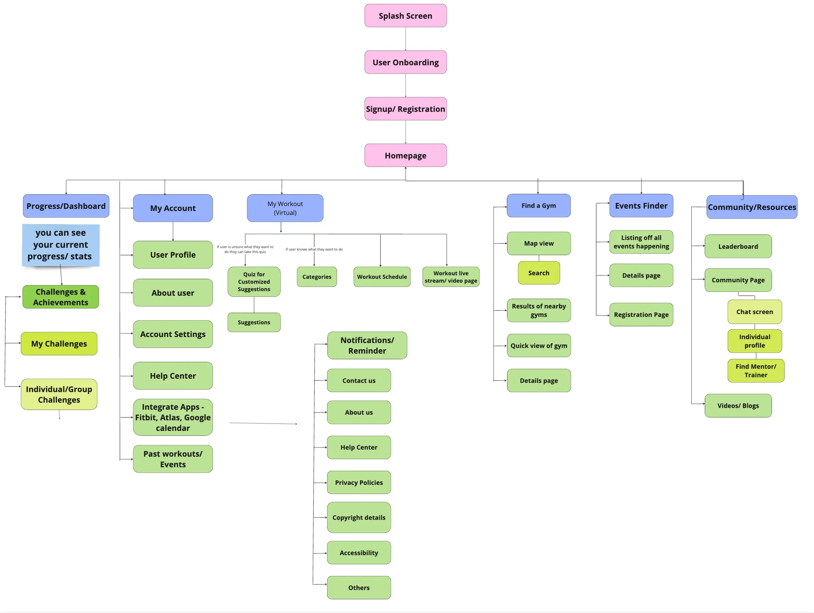

While studying at the University, maintaining a healthy lifestyle can be challenging for students juggling academics, social commitments, and busy schedules. Despite access to campus gyms and wellness programs, many struggle due to time constraints, lack of motivation, or limited awareness. This case study introduces Mfit, a mobile app designed to improve access to wellness resources and motivate students through progress tracking. Rooted in user-centered design, Mfit offers affordable, personalized guidance to help students bridge the gap between intention and action, making healthy living achievable for all.
What are we trying to solve?
How might we help students sustain a healthy lifestyle by improving access to physical wellness resources while keeping them motivated by tracking progress?

Design Process
The design process for Mfit reflects a user-centered approach, systematically addressing students’ challenges in maintaining a healthy lifestyle. Beginning with a clear understanding of the problem, the team defined objectives, explored technical possibilities, and aligned the app’s mission with user and brand values. Key insights into student habits and barriers were uncovered through surveys, interviews, and data analysis, forming the foundation for user personas and prioritized features. Analysis techniques like affinity mapping and usability testing guided the development of a logical structure and intuitive workflows. The design phase translated these insights into tangible outputs, including information architecture, wireframes, prototypes, and a cohesive visual identity. Finally, the team presented the entire process, ensuring a seamless handoff to developers. This iterative, research-driven method ensures that Mfit effectively bridges the gap between intention and action, empowering students to access wellness resources and stay motivated.
Understanding User
To create a solution addressing the challenges faced by students in maintaining a healthy lifestyle, we started with in-depth user research. This phase involved user interviews, a needs assessment, and the development of personas. By understanding our users, we laid the foundation for a design tailored to their specific needs and motivations.
Listening to our Users: Interviews and Needs Assessment
1. Objectives
Our goal was to uncover the everyday challenges and motivations of students in pursuing their fitness goals. We sought to understand their behaviors, frustrations, and aspirations to ensure our app’s features would address real user pain points.
2. Methodology
The research findings informed several key design decisions:
We conducted semi-structured interviews with eight participants from diverse backgrounds, fitness routines, and academic commitments. Each interview lasted 15–20 minutes and was designed to explore topics such as fitness habits, resource awareness, and barriers to staying active.
User Persona
Our research revealed distinct user needs, which we represented through two personas: Kara Jane and David Corser. Kara, our primary persona, reflects the creative, flexible fitness routines that many students desire. Her needs and challenges were central to shaping the app’s core features.
Kara Jane: The Creative Fitness Enthusiast
To better understand the needs of students like Kara, we developed a detailed persona that represents a segment of our target audience who value creative and flexible approaches to fitness. Kara embodies the challenges and aspirations of students balancing a busy academic schedule with personal wellness goals.

Information Architechture
Our site map shows a visual of the navigation between the various pages within MFit: starting from the splash screen to the homepage and onto the highlighted features of MFit.
Our highlighted features include the “My Workout” page, “Find a Gym” page, “Events Finder” page, and the “Community/Resources” page.
***Due to space constraints, the “Notifications/Reminder” heading was moved to the side. However, this section is a continuation of the blue “My Account” heading.***

High Fidelity Designs
1. Adding the quiz feature on the homepage
We added a quiz feature on the homepage, so that users were able to easily access it and navigate to that page. Putting the quiz feature on the homepage utilizes Nielsen’s heuristic Flexibility and Efficiency of use because it speeds up the interaction and there are fewer steps for the user to navigate to the quiz page.
2. Removing the hamburger menu
Removing the hamburger menu utilizes Nielsen’s heuristic of Error Prevention by preventing the error from ever occurring. This would make sure that users do not get confused by believing the hamburger menu contains the various features offered within the app.
3. Clear Labeling under Add an Event page
We used a larger font size and bold print for the “Your event has been added to your calendar!” label. Using knowledge from Fitt’s law, making the text larger would allow for less time for users to visually move to the target. This would create more efficient navigation for users.

Conclusion
This project wasn’t just about building a fitness app — it was about learning how to work effectively as a team while staying user-focused. Each team member brought a unique perspective that strengthened our final product. As a group, we’ve grown in our ability to collaborate, adapt to challenges, and create meaningful solutions. Moving forward, we’re excited to bring these lessons into future projects, knowing that great design happens when diverse minds come together with a shared vision.